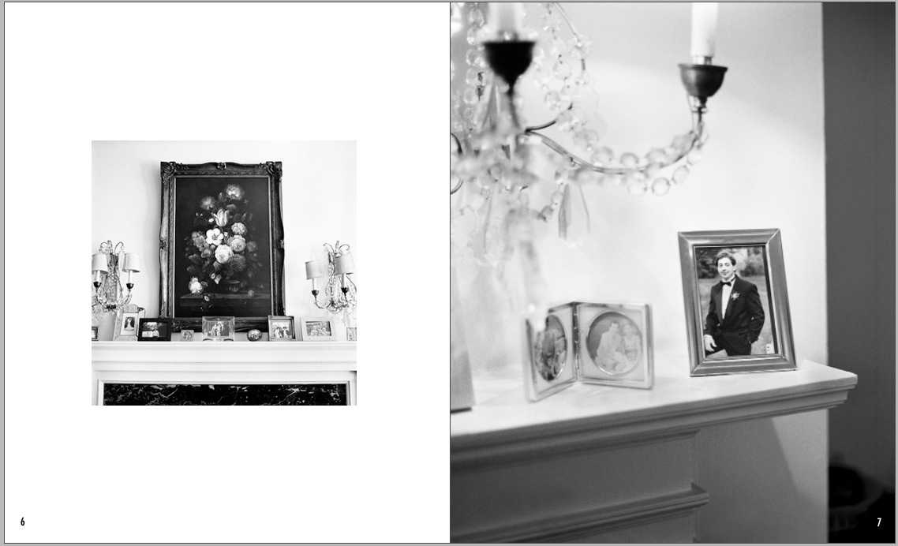
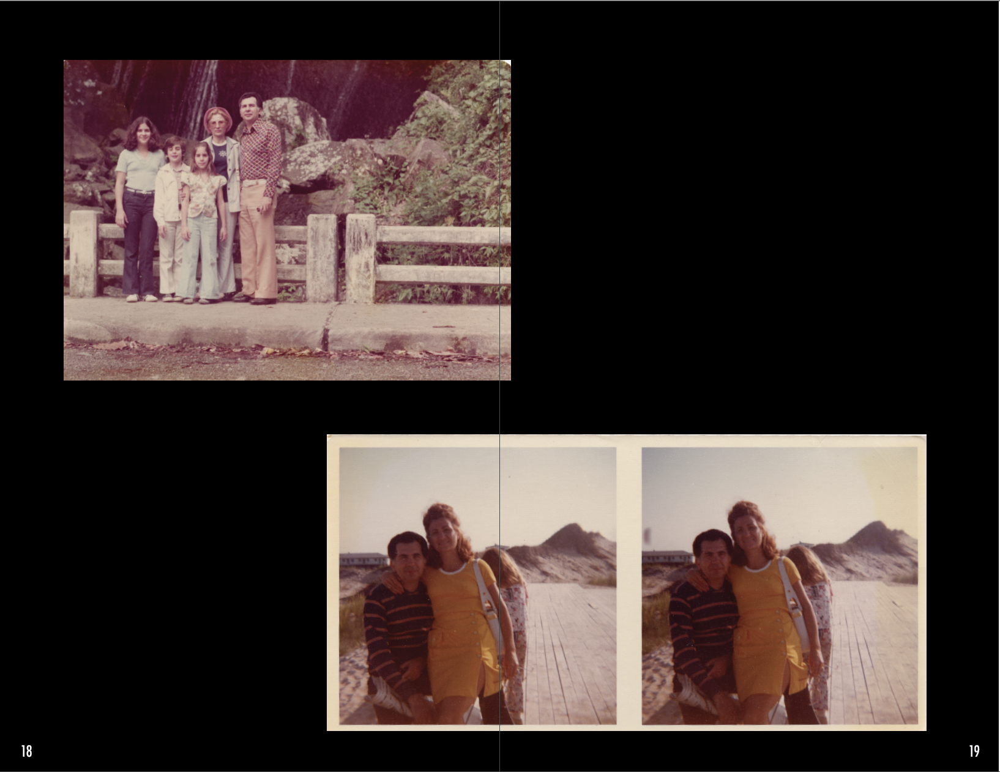

Over the past six months I have documented my grandparents and their space. This book contains seventeen images I have taken as well as six images from my Grandparents' archives.
Yiayia and Papou, as I call them are immigrants from Greece and have been married for over sixty years. They came to the USA at a young age and have lived in the same Upper East Side apartment for over thirty years. Their space has remained almost exactly the same for as long as I can remember. The pieces and objects in their space create a picture of them and how they have dealt with death and living in a country they immigrated to.
Through these images I wanted to explore not only them in their space but how the space reflects them. This specific selection of the work focuses on my grandparents relationship with each other, their sapce, and with their son, Christopher Georges, who passed away at 33 from complications related to lupus.
For a copy of your own, contact me at katiecomf@gmail.com